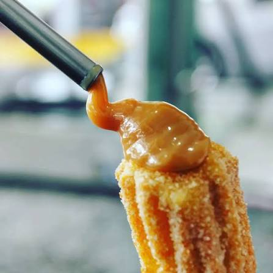

Ingredientes
- 1 xícara de água ou leite (240 ml)
- 2 colheres de sopa de açúcar
- 1 pitada de sal
- 1 xícara de farinha de trigo sem fermento
- 1 a 2 ovos (opcional, para dar maciez)
- 2 colheres de sopa de manteiga ou margarina

Em uma panela, coloque a água, a manteiga, o açúcar e o sal e leve ao fogo médio até levantar fervura. Assim que ferver, abaixe o fogo e adicione a farinha de trigo de uma só vez. Mexa vigorosamente com uma colher de pau até que a massa fique homogênea e forme uma bola que desgrude do fundo da panela. Continue mexendo e cozinhando por cerca de 2 minutos. Retire a panela do fogo e deixe a massa amornar por alguns instantes. Em seguida, adicione os ovos, um de cada vez, misturando muito bem após cada adição, até obter uma massa lisa e homogênea.
Coloque a massa em um saco de confeiteiro com bico estrela e modele os churros no tamanho desejado. Aqueça o óleo em fogo médio, tomando cuidado para não deixá-lo quente demais, e frite os churros aos poucos até ficarem dourados e crocantes por fora. Retire-os e deixe escorrer sobre papel-toalha. Ainda quentes, passe os churros em uma mistura de açúcar e canela. Para rechear, faça um furo no centro de cada churro com um bico injetor e preencha com doce de leite. Se preferir, corte os churros ao meio e recheie. Sirva em seguida.